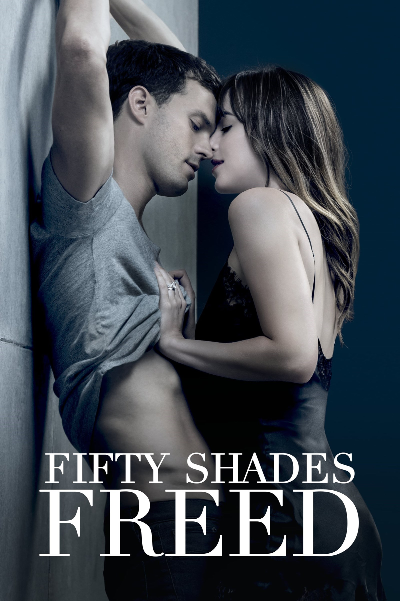

-

-

Cincuenta sombras liberadas
La apasionante historia de Anastasia Steele y Christian Grey continúa en 'Cincuenta sombras liberadas'. Anna y Christian por fin se han casado y ambos se disponen a vivir una apacible y romántica luna de miel en Europa. Pero no todo será tan idílico como ambos tenían planeado. Mientras se encuentran en Europa, les empiezan a llegar noticias de extraños incidentes ocurridos en las propiedades de Grey, ante lo que Christian comenzará a temer por la seguridad de su familia. Además, Christian se sentirá enojado por ciertos comportamientos de Ana durante su viaje, castigándola y dejándola varias marcas en su cuerpo que le harán revolverse la conciencia. Por su parte, Ana se reserva un gran secreto que no será de ningún agrado para Grey.